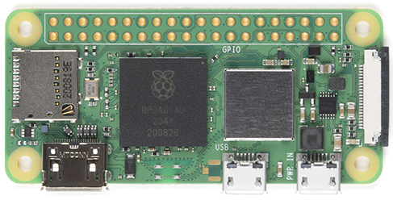

types of modals
Raspberry Pi:

- The first-generation Raspberry Pi Model B was released in February 2012, followed by the simpler and cheaper Model A
- In 2014, the Foundation released a board with an improved design, Raspberry Pi Model B+. These first generation boards feature ARM11 processors, are approximately credit-card sized and represent the standard mainline form-factor. Improved A+ and B models were released within a year. A "Compute Module" was released in April 2014 for embedded applications.

- The Raspberry Pi 4 Model B was released in June 2019[1] with a 1.5 GHz 64-bit quad core ARM Cortex-A72 processor, on-board 802.11ac Wi-Fi, Bluetooth 5, full gigabit Ethernet (throughput not limited), two USB 2.0 ports, two USB 3.0 ports, 1–8 GB of RAM, and dual-monitor support via a pair of micro HDMI (HDMI Type D) ports for up to 4K resolution. The version with 1 GB RAM has been abandoned and the prices of the 2 GB version have been reduced. The 8 GB version has a revised circuit board.
Raspberry Pi Zero:

- The first-generation Raspberry Pi Model B was released in February 2012, followed by the simpler and cheaper Model A
- In 2014, the Foundation released a board with an improved design, Raspberry Pi Model B+. These first generation boards feature ARM11 processors, are approximately credit-card sized and represent the standard mainline form-factor. Improved A+ and B models were released within a year. A "Compute Module" was released in April 2014 for embedded applications.